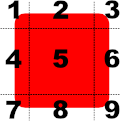
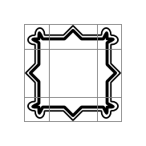
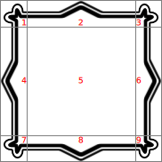
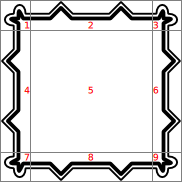
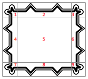

BorderImage QML Type
Paints a border based on an image. More...
| Import Statement: | import QtQuick |
| Inherits: |
Properties
- asynchronous : bool
- border
- border.bottom : int
- border.left : int
- border.right : int
- border.top : int
- cache : bool
- currentFrame : int
- frameCount : int
- horizontalTileMode : enumeration
- mirror : bool
- progress : real
- smooth : bool
- source : url
- sourceSize : QSize
- status : enumeration
- verticalTileMode : enumeration
Detailed Description
The BorderImage type is used to create borders out of images by scaling or tiling parts of each image.
A BorderImage breaks a source image, specified using the source property, into 9 regions, as shown below:

When the image is scaled, regions of the source image are scaled or tiled to create the displayed border image in the following way:
- The corners (regions 1, 3, 7, and 9) are not scaled at all.
- Regions 2 and 8 are scaled according to horizontalTileMode.
- Regions 4 and 6 are scaled according to verticalTileMode.
- The middle (region 5) is scaled according to both horizontalTileMode and verticalTileMode.
The regions of the image are defined using the border property group, which describes the distance from each edge of the source image to use as a border.
Example Usage
The following examples show the effects of the different modes on an image. Guide lines are overlaid onto the image to show the different regions of the image as described above.

For comparison, an unscaled image is displayed using a simple Image item. Here we have overlaid lines to show how we'd like to break it up with BorderImage:
Image { source: "pics/borderframe.png" anchors.centerIn: parent }

But when a BorderImage is used to display the image, the border property is used to determine the parts of the image that will lie inside the unscaled corner areas, and the parts that will be stretched horizontally and vertically. Then, you can give it a size that is larger than the original image. Since the horizontalTileMode property is set to BorderImage.Stretch, the parts of image in regions 2 and 8 are stretched horizontally. Since the verticalTileMode property is set to BorderImage.Stretch, the parts of image in regions 4 and 6 are stretched vertically:
BorderImage { anchors { fill: parent; margins: 1 } border { left: 30; top: 30; right: 30; bottom: 30 } horizontalTileMode: BorderImage.Stretch verticalTileMode: BorderImage.Stretch source: "pics/borderframe.png" }

Again, a large BorderImage is used to display the image. With the horizontalTileMode property set to BorderImage.Repeat, the parts of image in regions 2 and 8 are tiled so that they fill the space at the top and bottom of the item. Similarly, the verticalTileMode property is set to BorderImage.Repeat, so the parts of image in regions 4 and 6 are tiled to fill the space at the left and right of the item:
BorderImage { anchors { fill: parent; margins: 1 } border { left: 30; top: 30; right: 30; bottom: 30 } horizontalTileMode: BorderImage.Repeat verticalTileMode: BorderImage.Repeat source: "pics/borderframe.png" }

In some situations, the width of regions 2 and 8 may not be an exact multiple of the width of the corresponding regions in the source image. Similarly, the height of regions 4 and 6 may not be an exact multiple of the height of the corresponding regions. If you use BorderImage.Round mode, it will choose an integer number of tiles and shrink them to fit:
BorderImage { anchors { fill: parent; margins: 6 } border { left: 30; top: 30; right: 30; bottom: 30 } horizontalTileMode: BorderImage.Round verticalTileMode: BorderImage.Round source: "pics/borderframe.png" }
The Border Image example in Qt Quick Examples - Image Elements shows how a BorderImage can be used to simulate a shadow effect on a rectangular item.
Image Loading
The source image may not be loaded instantaneously, depending on its original location. Loading progress can be monitored with the progress property.
See also Image and AnimatedImage.
Property Documentation
horizontalTileMode : enumeration |
verticalTileMode : enumeration |
This property describes how to repeat or stretch the middle parts of the border image.
| Constant | Description |
|---|---|
BorderImage.Stretch | Scales the image to fit to the available area. |
BorderImage.Repeat | Tile the image until there is no more space. May crop the last image. |
BorderImage.Round | Like Repeat, but scales the images down to ensure that the last image is not cropped. |
The default tile mode for each property is BorderImage.Stretch.
currentFrame is the frame that is currently visible. The default is 0. You can set it to a number between 0 and frameCount - 1 to display a different frame, if the image contains multiple frames.
frameCount is the number of frames in the image. Most images have only one frame.
asynchronous : bool |
Specifies that images on the local filesystem should be loaded asynchronously in a separate thread. The default value is false, causing the user interface thread to block while the image is loaded. Setting asynchronous to true is useful where maintaining a responsive user interface is more desirable than having images immediately visible.
Note that this property is only valid for images read from the local filesystem. Images loaded via a network resource (e.g. HTTP) are always loaded asynchronously.
The 4 border lines (2 horizontal and 2 vertical) break the image into 9 sections, as shown below:
Each border line (left, right, top, and bottom) specifies an offset in pixels from the respective edge of the source image. By default, each border line has a value of 0.
For example, the following definition sets the bottom line 10 pixels up from the bottom of the image:
BorderImage { border.bottom: 10 // ... }
The border lines can also be specified using a .sci file.
cache : bool |
Specifies whether the image should be cached. The default value is true. Setting cache to false is useful when dealing with large images, to make sure that they aren't cached at the expense of small 'ui element' images.
mirror : bool |
This property holds whether the image should be horizontally inverted (effectively displaying a mirrored image).
The default value is false.
progress : real |
This property holds the progress of image loading, from 0.0 (nothing loaded) to 1.0 (finished).
See also status.
smooth : bool |
This property holds whether the image is smoothly filtered when scaled or transformed. Smooth filtering gives better visual quality, but it may be slower on some hardware. If the image is displayed at its natural size, this property has no visual or performance effect.
By default, this property is set to true.
source : url |
This property holds the URL that refers to the source image.
BorderImage can handle any image format supported by Qt, loaded from any URL scheme supported by Qt.
This property can also be used to refer to .sci files, which are written in a QML-specific, text-based format that specifies the borders, the image file and the tile rules for a given border image.
The following .sci file sets the borders to 10 on each side for the image picture.png:
border.left: 10 border.top: 10 border.bottom: 10 border.right: 10 source: "picture.png"
The URL may be absolute, or relative to the URL of the component.
See also QQuickImageProvider.
sourceSize : QSize |
This property holds the actual width and height of the loaded image.
In BorderImage, this property is read-only.
See also Image::sourceSize.
status : enumeration |
This property describes the status of image loading. It can be one of:
| Constant | Description |
|---|---|
BorderImage.Null | No image has been set |
BorderImage.Ready | The image has been loaded |
BorderImage.Loading | The image is currently being loaded |
BorderImage.Error | An error occurred while loading the image |
See also progress.